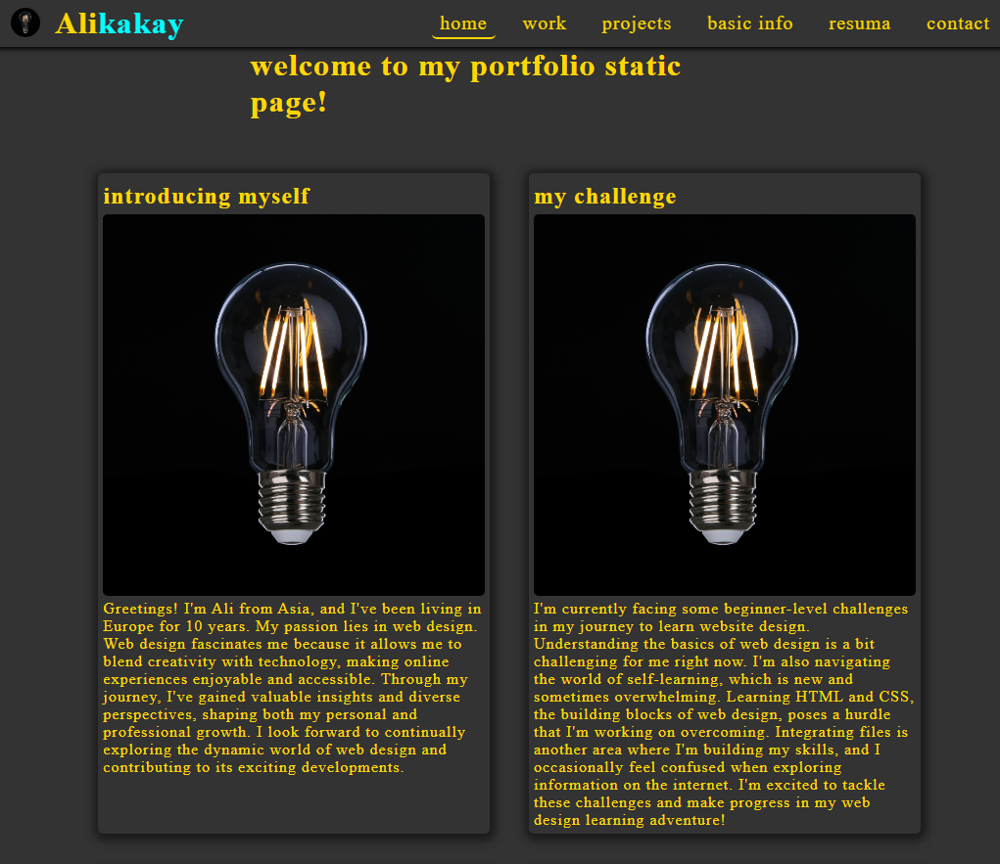
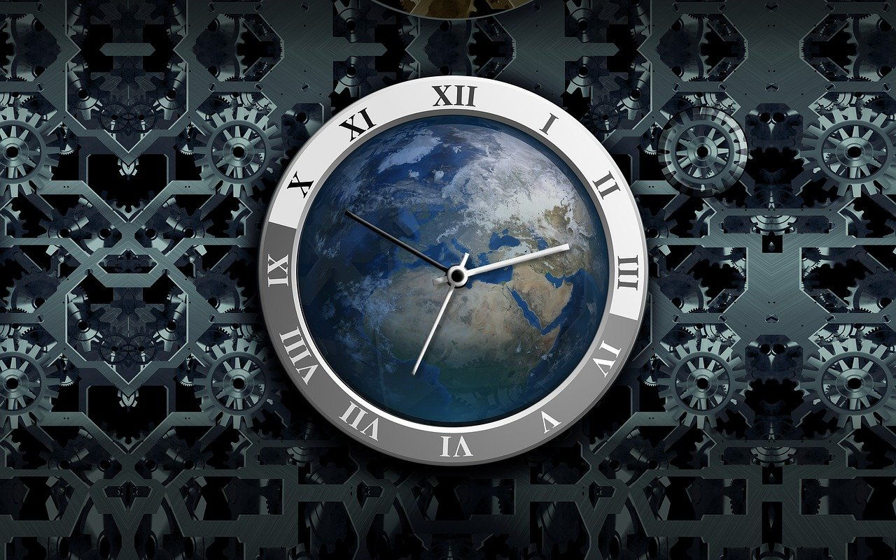

introducing my self

Greetings! I'm Ali from Asia, and living in Europe for 12 years. My passion lies in web design. Web design fascinates me because it allows me to blend creativity with technology, making online experiences enjoyable and accessible. Through my journey, I've gained valuable insights and diverse perspectives, shaping both my personal and professional growth. I look forward to continually exploring the dynamic world of web design and contributing to its exciting developments.
my challenge
I'm currently facing some beginner-level challenges in my journey to learn website design. Understanding the basics of web design is a bit challenging for me right now. I'm also navigating the world of self-learning, which is new and sometimes overwhelming. Learning HTML and CSS, the building blocks of web design, poses a hurdle that I'm working on overcoming. Integrating files is another area where I'm building my skills, and I occasionally feel confused when exploring information on the internet. I'm excited to tackle these challenges and make progress in my web design learning adventure!
my skills
In summary, I'm at the beginner level in web design with a developing skill set. I'm just starting to grasp the basics of HTML and CSS to structure and style web content. While I have a foundational understanding of JavaScript, I'm in the early stages of learning this dynamic scripting language. My familiarity with general web technologies is at an introductory level, providing a starting point for further exploration. In terms of social relations, I'm eager to cultivate effective collaboration skills within the evolving landscape of web design.
my solution

I improve my design skills by trying and trying again, learning from mistakes. I explore web design through beginner-friendly YouTube videos and other online resources. Tips from AI and simple advice guide me on this creative journey. Consistent effort and hard work got me to this point. Starting from scratch, I embraced repeated learning, relied on beginner-friendly info, and tapped into the power of artificial intelligence. Now, through ongoing dedication, I've reached a level where my design journey is shaping up, proving that continuous learning and practical experience pave the way in this exciting world of design.
my time organization

I manage my time for fun and balance alongside my main job. Every effort I put in is driven by enjoyment. Designing is my joyful side pursuit, and I ensure it complements my primary work. I allocate specific times for creativity, making it a delightful addition to my daily routine. It's not about pressure; it's about having a good time. This approach helps me stay refreshed, pouring positive energy into both my job and my design adventures. By keeping things enjoyable and well-balanced, I make the most of my time while maintaining a happy synergy between my main responsibilities and my creative pursuits.